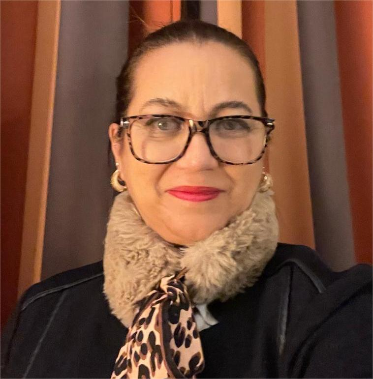
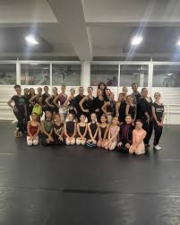
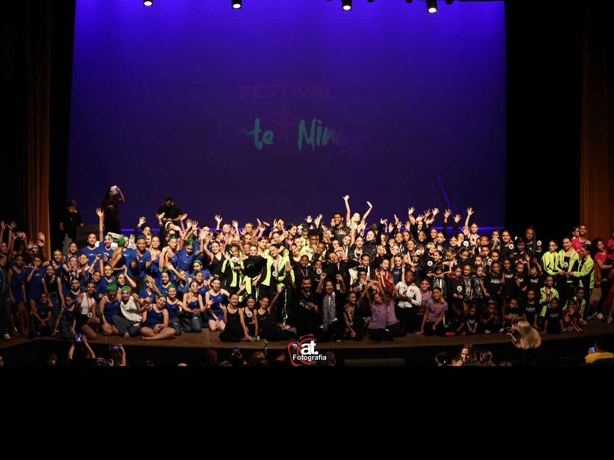
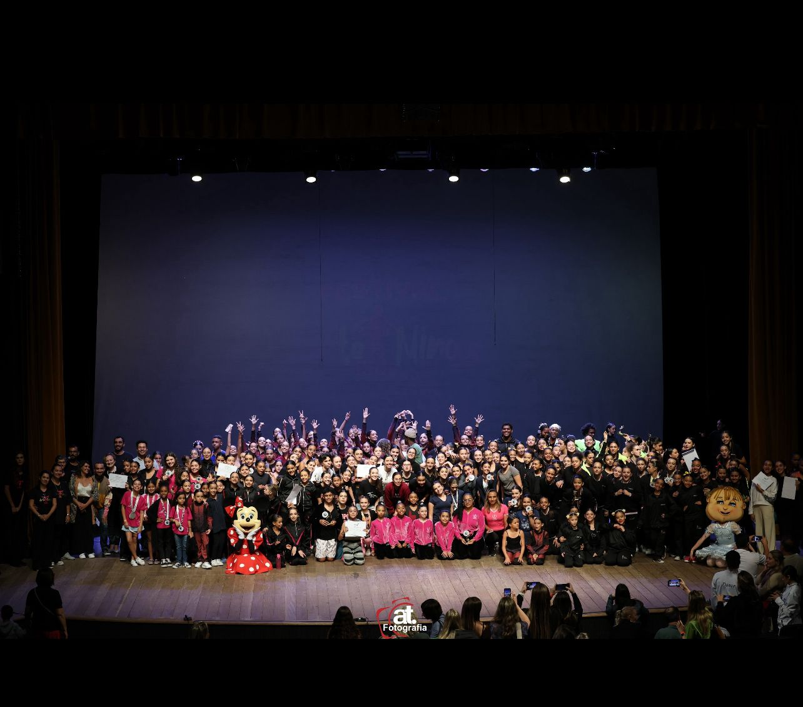
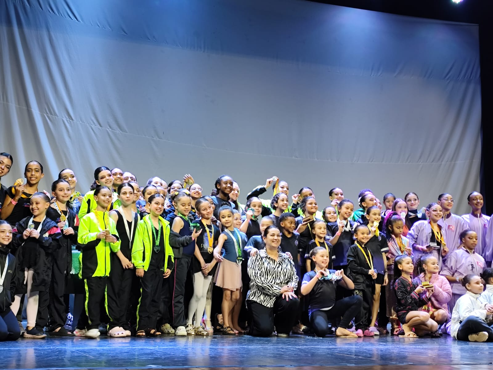

& Seminário Arte Minas
Bailarina, coreógrafa, pedagoga e gestora cultural com mais de quatro décadas de atuação ininterrupta. Primeira Bailarina na Alemanha, professora do Teatro alla Scala de Milão, fundadora do mais completo curso de dança do Brasil — e referência viva da cultura da dança em Minas Gerais.

Nascida em Belo Horizonte, Adriana Villela da Motta Costa Quintão iniciou sua formação em ballet clássico pelo método russo, sob orientação dos professores Carlos Leite e Joaquim Ribeiro, e pela Fundação Clóvis Salgado, onde obteve certificados de frequência com mestras de renome internacional como Tatiana Leskova e Françoise Martinet.
Sua carreira profissional a levou a palcos de excelência no Brasil e na Europa: foi Demi Solista no Teatro Municipal do Rio de Janeiro, bailarina na Companhia Nacional de Bailados de Lisboa sob direção de Armando Jorge, Solista no Stadttheater Augsburg e, no ápice de sua carreira como intérprete, Primeira Bailarina no Stadttheater Mönchengladbach Krefeld, na Alemanha.
Ao retornar ao Brasil, dedicou-se à transmissão do conhecimento acumulado. Foi professora e repetiteur na Companhia de Dança de São Paulo, trabalhando com o repertório de Nacho Duato, George Balanchine e Jiří Kylián, e professora convidada da Companhia Deborah Colker. Sua reputação internacional se consolidou com o convite para ministrar aulas ao corpo de baile do Teatro alla Scala de Milão.
"O Seminário Arte Minas nasceu com o propósito de transformar vidas. Durante essa década, celebramos a arte, o aprendizado e o impacto positivo que a dança traz."
— Adriana Villela da Motta Costa QuintãoEm 2026, foi convidada a integrar o júri do European Ballet Grand Prix em Viena, um dos mais importantes festivais internacionais de ballet do mundo, onde também ministrou Masterclasses, projetando o nome de Minas Gerais no mais alto nível da dança mundial.
Fundação Clóvis Salgado
Belo Horizonte · Brasil
Formação em Ballet Clássico com Tatiana Leskova e Françoise Martinet. Início da carreira profissional como bailarina da Companhia de Dança.
Teatro Municipal do Rio de Janeiro
Rio de Janeiro · Brasil
Demi Solista em uma das mais prestigiadas casas de espetáculo do país.
Companhia Nacional de Bailados
Lisboa · Portugal
Bailarina sob a direção de Armando Jorge. Primeira experiência internacional em companhia europeia de prestígio.
Stadttheater Augsburg
Augsburg · Alemanha
Solista. Consolidação da carreira no cenário do ballet europeu.
Primeira Bailarina
Mönchengladbach Krefeld · Alemanha
Posição máxima no ballet clássico profissional. Ápice da carreira como intérprete no Stadttheater Mönchengladbach Krefeld.
Cia. de Dança de SP · Cia. Deborah Colker
São Paulo · Brasil
Professora e repetiteur. Repertório de Nacho Duato, G. Balanchine e Jiří Kylián. Professora convidada na Cia. Deborah Colker.
La Scala · Conservatório Nacional de Lisboa
Milão · Lisboa · Hagen
Professora convidada do Corpo de Baile da La Scala durante digressão brasileira. Professora no Conservatório Nacional de Lisboa e no Stadttheater Hagen.
Fundação do Seminário Arte Minas
Belo Horizonte · MG · Brasil
Fundadora e diretora do ecossistema Arte Minas. Diretora do Depto. de Dança do SATED-MG. Jurada no European Ballet Grand Prix, Viena 2026.
Ao longo de sua trajetória, o ecossistema Arte Minas consolidou-se como uma das principais plataformas de formação, difusão e internacionalização da dança em Minas Gerais.
Quatro iniciativas complementares que formam o mais completo polo de fomento à dança do Estado de Minas Gerais.

O curso de dança mais completo do Brasil. Realizado anualmente em Belo Horizonte, reúne mais de 18 professores de renome nacional e internacional por edição. Oferece bolsas de 100% para escolas como a Escola Nacional de Dança de Lisboa e o Miami City Ballet. 10 edições ininterruptas — inclusive durante a pandemia.

Reconhecido como "o festival mais amado do Brasil". Realizado no Teatro SESIMINAS em Belo Horizonte, atrai escolas e grupos de dança de todo o país. Parceiro estratégico do GPAL — Grande Prêmio América Latina — permitindo que talentos mineiros alcancem palcos internacionais. 8 edições realizadas.

Um dos maiores eventos de dança infantil do Brasil, voltado exclusivamente a crianças de 4 a 14 anos. Ao investir na base da cadeia produtiva da dança, o projeto garante a sustentabilidade da arte para as próximas gerações e a formação de novos públicos e talentos em Minas Gerais.

Concurso de dança que oferece bolsas de estudo internacionais e vagas em importantes competições e escolas ao redor do mundo. Principal plataforma de internacionalização para jovens bailarinos de Minas Gerais, transformando trajetórias e abrindo portas para carreiras globais.
Professora convidada para o Corpo de Baile da La Scala durante digressão brasileira — uma das mais celebradas instituições de ballet do mundo.
Professora convidada na Escola de Dança (dir. Pedro Carneiro) e na Companhia Nacional de Ballet de Lisboa (dir. Luiza Taveira).
Professora convidada, somando-se à longa trajetória alemã como Solista e Primeira Bailarina.
Jurada do festival internacional de ballet e ministrante de Masterclasses — projetando Minas Gerais no mais alto nível da dança mundial.
Professora e repetiteur. Repertório de Nacho Duato, George Balanchine e Jiří Kylián.
Professora convidada de uma das mais renomadas companhias de dança contemporânea do Brasil e do mundo.
Comenda conferida pelo Vereador Professor Wendel Mesquita em reconhecimento à contribuição às artes e à história do SATED-MG no Estado de Minas Gerais.
Reconhecimento internacional pela trajetória artística e pela contribuição ao desenvolvimento da dança no Brasil e no mundo.
Integrou o júri de um dos mais importantes festivais internacionais de ballet do mundo e ministrou Masterclasses para os bailarinos participantes.
Homenagem de Congonhas – MG pelo brilhante desempenho coreográfico.
O Seminário Arte Minas foi destaque na principal publicação especializada em dança do Brasil, com apoio da Capezio — referência mundial do setor.
Eleita diretora do Departamento de Dança do SATED-MG, representando a classe artística mineira.
Para a 11ª edição do Seminário Arte Minas, em janeiro de 2027, o projeto propõe um curso intensivo de 6 dias com Gala Final no domingo, focado na formação em Método Russo (Vaganova) e Método Inglês (RAD). Três professores especialistas convidados ministrarão tanto as aulas de metodologia pedagógica quanto as aulas práticas de técnica clássica.
O projeto é submetido ao Edital de Chamamento Público Nº 04/2026 – Execução Cultural da SECULT-MG, com recursos da Política Nacional Aldir Blanc de Fomento à Cultura (PNAB). Local de realização: Academia Wanda Bambirra ou espaço equivalente em Belo Horizonte.
O projeto propõe a realização da 11ª edição do Seminário Arte Minas, consolidando-se como uma das principais ações de formação em dança do estado de Minas Gerais.
A iniciativa promove capacitação técnica, intercâmbio artístico e acesso a oportunidades internacionais, contribuindo diretamente para o fortalecimento da cadeia produtiva da dança no estado.
📄 Baixar Projeto Completo